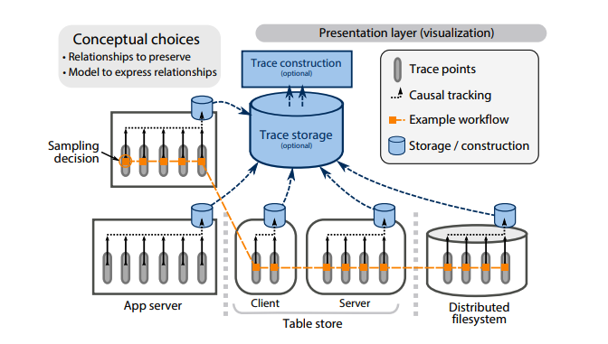
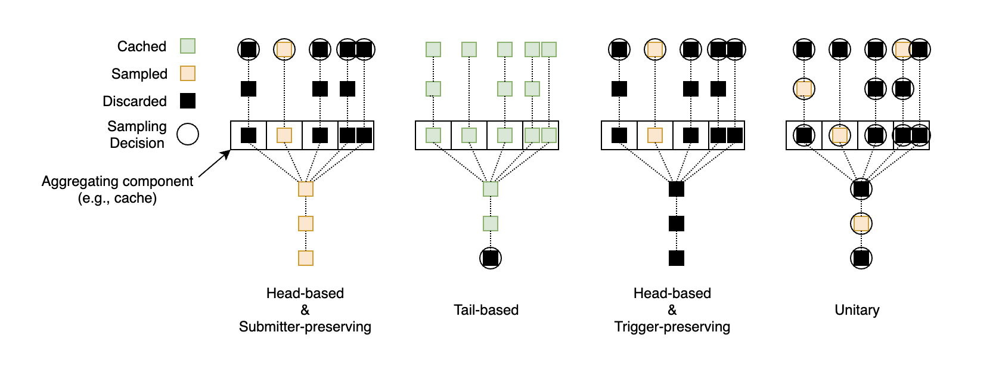
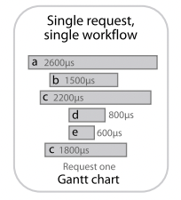
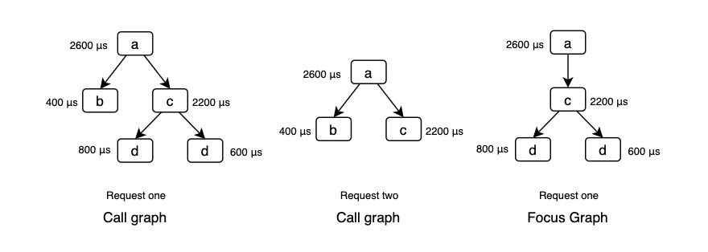
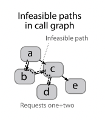
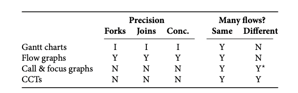

So, you want to trace your distributed system? Key design insights from years of practical experience (2014)
本文主要介绍一篇关于调用链追踪系统设计的论文。行文会尊从原论文的结构，但不是逐字翻译，以意译和加入个人理解的转述为主。
1. Introduction
如果把公司内部所有 IT 系统看作一个巨型分布式系统，通常其规模庞大、结构复杂，且拥有多层依赖和抽象，每层单拎出来也同样是个分布式系统。以 Google 的业务服务为例，如搜索、广告，会构建于内部基础服务之上，如 Bigtable；而 BigTable 又构建于 Google File System (GFS) 和 Chubby 之上。即便是业务服务本身，也可能存在多层 (multiple tiers) 结构，其中每层同样支持横向扩展。从巨石应用走向微服务，我们在组织架构和服务架构上都变得高效，但其代价就是下降的系统可观测性 (observability)。一个很现实的问题就是：几乎不存在一位工程师能够了解系统全貌，那么问题排查也将变得困难。从单机走向分布式，只关心单个进程、单台机器的性能指标已经远远不够，我们需要将监控的重心从以机器为中心 (machine-centric) 转向以流程为中心 (workflow-centric)，后者的核心方法便是调用链追踪系统。分布式系统的终极理想可以描述为：在获得横向扩展性的同时不暴露自己分布式的本质，即向外提供与单机系统相同的体验。调用链追踪系统概莫能外。
按：原文将请求处理过程称为 workflow，下文会使用流程和请求来指代它；原文将以流程为中心的观测方法统称为 end-to-end tracing，由于现在分布式系统几乎是所有讨论的默认假设，本文将不再强调 end-to-end，将其直接译为调用链追踪。
尽管大家对调用链追踪的兴趣浓厚，但关于如何设计一个调用链追踪系统，市面上、社区中提供的信息十分有限。更令人担忧的是，现存的文献和实践都将调用链追踪当作多种场景的万能解决方案 (one-size-fits-all)，然而我们以及 Dapper 的实践经验证明事实并非如此。因此在提出你的解决方案之前，最好明确你想要解决的问题是什么。
调用链追踪的基本原理和概念十分通俗易懂：就是在系统中的各个节点 (组件) 上埋点，当请求经过时将节点信息 (trace point) 上报，最后汇总信息重建调用链。我们从经验中总结了调用链追踪系统的 4 个设计维度，通过组合这些设计维度的选择就能得到不同应用场景的解决方案：
- which causal relationships should be preserved: 保留什么样的因果关系？
- how causal relationships are tracked: 如何追踪因果关系？
- how to reduce overhead by sampling: 如何通过采样降低成本？
- how end-to-end traces should be visualized: 如何将追踪的结果可视化？
如果对这 4 个设计维度以及它们之间的权衡关系没有足够的理解，设计一个调用链追踪系统将可能让实现与场景脱节。事实上，由于这些维度之前并未被实践者或研究者提出和充分理解，许多调用链追踪系统的实现并未能充分达成其设计理想。
2. Backgroud
本节主要陈述一些调用链追踪系统的背景信息，包括核心应用场景、解决方案分类以及本文所推崇的架构方案。
2.1 Use cases
异常检测：Anomaly detection
异常检测是诊断场景之一，指定位和排查偶现的异常请求。通常这些异常请求的出现概率极低，可以认为它们位于响应时延
稳态问题：Diagnosing steady-state problems
稳态问题是诊断的另一场景，它指的是定位和排查广泛存在于大量请求中的问题。这些问题影响的是响应时延在
分布式侧写：Distributed profiling
如果你使用过你熟悉的编程语言的侧写工具，你肯定知道它展示的信息包含哪些，如某函数调用的次数、总耗时、平均耗时等等，以它为起点理解分布式侧写就不难了。分布式系统侧写的目的是同样是找到导致系统性能瓶颈的组件或功能。由于请求在每个组件上花费的时间可能因为调用方式的改变而改变，侧写工具需要展示的通常是聚合后的数据，如平均在某组件上消耗的时间，这时是否保存所有完整的调用链信息将变得不再重要。
资源归因：Resource attribution
资源归因需要回答的问题是：“谁该为我的服务的资源消耗买单？” 它需要将每次资源消耗与资源占用请求方 (submitter) 关联。资源归因也是成本分析的基础。
负载建模：Workload modeling
负载建模主要指观测负载情况并为之建模，可以用作系统行为的分析和推测，如基于压力测试的容量预估。利用负载建模可以用于寻找关键链路，也可以回答 "what-if" 问题，即如果对系统做 A 操作，会对系统整体产生怎样的影响。任何一个设计维度对于负载建模来说都很重要，但设计维度的选择将影响一个调用链追踪系统最终能够支持建立的负载模型。
2.2 Approaches to end-to-end tracing
几乎所有调用链追踪系统的解决方案都不会逃出下面这三种：
元信息传播：Metadata propagation
元信息传播，意味着将系统中的组件看作是白盒，工程师可以通过修改系统组件或逻辑注入来传播元数据，如 TraceID 等，从而勾勒出系统中的因果活动 (causally-related activity)。为了使调用链追踪模块对被追踪系统整体的影响降低，如响应时延的上升和吞吐量的下降，大多数此类解决方案都会使用采样的方式，仅收集少量的数据。
基于约定模式：Schema-based
粗略地阅读了一下 Magpie 的论文，基于约定模式的做法的使用场景实际并非典型的分布式系统，而是在单台主机上运行多个进程/线程的场景，通过规定格式的日志信息将属于单个请求的数据 join 起来，并不适用于现代云原生分布式系统的场景。
黑盒推理：Black-box inference
黑盒推理，顾名思义，将分布式系统看作是黑盒，无代码侵入。主要通过基于日志和时间戳，利用统计、机器学习的手段来推理因果关系。尽管完全无代码侵入的调用链追踪技术看起来非常性感，但他无法保证因果关系的推断完全精准，对于一些异步行为 (如缓存写出、事件驱动系统) 、并发等场景则无能为力。异步处理在分布式系统中十分常见，不能处理异步场景在实践中常常无法让人接受。
2.3 Anatomy of end-to-end tracing
下图展示的是基于元信息传播的调用链追踪系统架构：

分布式系统中的每个组件协同工作，将请求在每个组件中停留的信息，即 trace point，以及因果关系 (causality) 上报到 trace storage，统一通过存储中心建立索引，重建调用链 (trace) 信息，最终通过某些可视化形式展示在开发者面前。其中关键内容包含：追踪数据埋点 (trace points)、因果关系追踪机制 (causal-tracking mechanism)、采样机制 (sampling mechanism)、存储模块 (storage component)、调用链重建模块 (trace construction) 以及展示层 (presentation layer)。
开发调用链追踪系统时，设计者需要回答两个概念问题，这两个问题的答案将深远地影响系统的基础和扩展能力。第一个问题是：应该捕获什么样的因果关系？保持所有的关系信息可能导致成本激增，而保留错误的因果关系将产生无用的调用链数据，第二个问题是：使用什么样的模型来表示因果关系？目前最流行的模型是有向无环图 (DAG)，它能够表达线性、并发等各种因果关系，详见本文的第 3 部分；上文提到过，利用元数据传递的方式追踪因果关系是大部分实现采用的方案，那究竟需要传递哪些元信息？这其中有哪些设计权衡？在每个进程内部如何埋点，也是元数据传递设计决定的一部分，有的方案在通信框架中通过中间件、拦截器或过滤器，在请求的开始和结束点位上注入 trace point 信息，如 RPC、HTTP 或一些自研的框架；别的方案则是通过 AOP 的方式自动注入，没有代码入侵，本文的第 4 部分会讨论这个话题；大多数调用链追踪方案都会使用采样技术来限制资源使用，如被追踪服务的运行时资源，调用链追踪系统的存储资源。连贯采样 (coherent sampling) 是许多场景的首选方式，即要么整条调用链信息都采，要么都不采。不同采样方案对不同因果关系的支持不同，详见本文的第 5 部分；最后一个模块就是数据展示层，展示层的易用性对研发人员至关重要，有关不同的展示方案及其权衡详见本文的第 6 部分。
3. Which causal relationships should be preserved?
理想情况下，调用链追踪系统需要捕获所有必要、正确的因果关系。提到因果关系，我们首先想到的便是 Lamport's 在其经典的论文中提出的 happens-before 关系 "
3.1 Intra-request slices
假设一个请求背后需要调用多个服务完成，如果调用都是同步工作，那么毫无疑问每次调用都属于该请求。如果是异步工作，比如留存在 write-back cache 中的数据因为后续的请求写入数据而最终被清出到磁盘，那么"清出数据到磁盘"这项工作应该归属于前一个还是后一个请求？

左图和右图分别表示两种归属方案：submitter-preserving 和 trigger-preserving。
3.1.1 The submitter-preserving slice
submitter-preserving 意味着异步工作被另一个请求触发时，该工作将被归属于始作俑者，即提交者 (submitter)。submitter-preserving 擅长处理是资源归因场景，将资源消耗归属于始作俑者更加公平合理。但从上图可以看出，submitter-preserving 的可视化展示比较不符合直觉甚至难以理解，一个请求的部分调用链信息可能在这个请求已经完成很长时间以后才产生，而且这些工作实际上并不在该请求的核心路径中，对开发者并不友好。
3.1.2 The trigger-preserving slice
trigger-preserving 意味着异步工作被另一个请求触发时，该工作将被归属于触发者 (trigger)。显然 trigger-preserving 方案符合开发者的预期，它会捕获所有单个请求在响应之前所做的所有工作。如上图所示，由 request one 写入的缓存数据，被 request two 清出，这时清出工作被计算到 request two 头上。trigger-preserving 方案适合工程师排查线上问题的场景，能够很直观地回答 "为什么这个请求处理得慢" 的问题。
3.2 Preserving inter-request slices
除了单个请求处理内部的关系，还有一些因果关系存在于不同请求之间，其中最常见的两种是：contention-preserving 和 read-after-write-preserving。假设两个请求同时争抢相同的独占资源，二者就必须先获取互斥锁，没得到锁的请求就需要等待获取锁的请求释放锁，这就是 contention 关系。记录 contention 关系可以帮助我们找到并发依赖问题；假设两个请求，一个写入数据到存储介质 (如某个文件) 中，另一个从介质中读取刚被写入的数据，二者就存在数据上的依赖关系，这就是 read-after-write 关系。比如一个 map-reduce 任务，reduce 和 map 任务就会通过存储介质传递数据，记录 read-after-write 关系能帮助系统理解这种请求的行为。
4. How should causal relationships be tracked?
现代调用链追踪系统通常采用元数据传播的方式来支持跨进程的调用链信息追踪。4.1 节将介绍不同的元数据传播方案以及它们之间的权衡；4.2 节将介绍如何捕获 forks 和 joins 因果关系。
4.1 Tradeoffs between metadata types
单个进程内部的元数据可以是静态 (static)，也可以是动态 (dynamic)，而动态元数据可以进一步被划分为定长 (fixed-width) 或变长 (variable-width)。因此一共有 3 类元数据设计方案：
- 静态定长 (Static, fixed-width)
- 动态定长 (Dynamic, fixed-width)
- 动态变长 (Dynamic, variable-width)
具体使用哪种元数据需要考虑 3 个因素：
- 大小：由于元数据需要跨进程传递，更大的元数据会使得 RPC 消息的体积增大
- 易失性：调用链数据在元数据传播过程中丢失局部信息的容易程度
- 是否需要重建：单个进程中可以保存到此为止的完整调用链信息，也可以只保存当前进程的局部信息，后者依赖聚合重建才能得到完整调用链信息。
从这 3 个因素上考量 3 种元数据方案，可以得到下表：
| 元数据类型 | 大小 | 易失性 | 是否需要重建 |
|---|---|---|---|
| 静态定长 | 小 | 易失 | 需要 |
| 动态定长 | 中 | 易失 | 需要 |
| 动态变长 | 大 | 非易失 | 不需要 |
静态定长元数据
静态定长元数据，通常只包含一个 TraceID。调用链追踪系统将收集到的 trace points 按照 TraceID 聚合即可。那么拿到了所有属于同一个请求的调用链追踪数据后，如何为它们建立因果关系？如果是在同一个线程内部产生，就需要依赖系统的墙上时钟；如果是跨进程行为，就涉及到分布式系统必须面对的时钟同步问题。如果不存在精度足够的同步时钟 (synchronized clocks)，系统就需要借助上下游服务的标识信息，如 thread IDs，帮助系统归拢 trace points 间的因果关系。
静态定长元数据的缺点在于数据易失，因为它依赖于元数据注入、多进程数据上报、聚合、稳定的外部时钟服务及其它可能的信息。系统中的部分组件可能不支持注入元数据，多进程数据上报可能因为超限被丢弃，时钟服务可能出现偏移，thread IDs 可能不唯一，出现这些问题时，静态定长元数据将无法保证数据完整性。
动态定长元数据
动态定长元数据，除了 TraceID 之外，还会保存逻辑时钟信息用以确定因果关系，从而排除对外部时钟的依赖。在每个 trace point 上需要生成新的、随机的逻辑时间戳，并通过上报上游透传下来的老时间戳和新时间戳记录因果关系。最简单的逻辑时间戳就是计数器 (Counter) ，在每个 trace point 上自增即可，但这种做法对于记录 fork 和 joins 因果关系则无能为力。也有一些系统使用混合策略，既在组件间使用逻辑时间戳，组件内依赖外部时钟生成时间戳。
动态定长元数据同样存在数据易失问题，如果在一个线性调用链上某个节点的数据丢失，那么这个节点上下游数据之间的因果关系便无法建立。
动态变长元数据
动态变长元数据，即为了确定因果关系活动，元数据的大小可以发生动态变化。这时系统可以使用类似 interval-tree clocks 的数据结构来确认系统中事件的因果关系。vector clocks 的实现依赖于预先知道分布式系统中的所有参与活动的组件 ID，并且要求这些 ID 全局唯一，但 interval-tree clocks 可以根据当前活跃的线程数动态扩大和缩小，并且可以对任意两个时间戳判断其是因果关系还是并发关系。目前存在的实践中，并没有系统使用 vector clocks 或 interval-tree clocks。
另一方面，变长数据能通过冗余数据降低数据的易失性，即在元数据中保存并透传所有已经执行过的 trace points 信息，一旦请求结束，完整的 trace 数据也已经可以获取，无需额外聚合重建。
4.2 How to preserve forks and joins
一些并发场景中存在 forks 和 joins 的因果关系，如下图所示：

对于定长元数据，无论是动态还是静态，都能够通过保留 trace-points 之间的一对多和多对一关系来记录 forks 和 joins 因果关系。静态定长数据中，需要包含 forks 来源以及 join 等待的 trace point 标识集合信息，如 threadID；动态定长数据中，需要包含 forks 来源 trace point 的初始逻辑时间戳，以及 join 必须等待的逻辑时间戳集合信息。动态变长元数据，可以直接通过 interval-tree clocks 来直接推断 trace points 之间的 forks、joins 关系。
5. How should sampling be used to reduce overhead?
调用链数据量与业务体量正相关，如果全量采集调用链数据意味着调用链追踪系统需要承受与公司服务体量相当的请求压力。这些压力主要体现在两方面：每个实例的运行时性能压力、调用链追踪系统本身的计算和存储压力。为了降低这两方面压力，采样 (sampling) 是大多数追踪系统的必备模块。即便多数分析并不依赖 trace points 的数据持久化，采样仍然能降低一些分析场景需要处理的数据规模。实践中常用的采样策略可以分为三类：
- Head-based coherent sampling
- Tail-based coherent sampling
- Unitary sampling
5.1 采样策略与因果关系
三类采样策略与 intra-request slices 综合示意图如下所示 (这里没有采用论文原图，略有出入)：

每张图上的 5 条竖线从左往右依次表示 5 个连续请求，中间的方格表示聚合组件 (如缓存)，大小为 4，因此第 5 个请求恰好会触发聚合操作。每个图中的方块表示 trace point，方块上的圆圈则表示做出采样决策的位置。假设系统支持 submitter-preserving，那么 head-based 会直接丢弃无需采样的请求，但只要有一个请求被采样，聚合操作就必须采集，因此聚合操作采样的概率会随着前向请求的增加而呈指数增加；tail-based 需要缓存前面所有请求的信息，在聚合操作结束后决定采样方案。假设系统支持 trigger-preserving，那么聚合操作是否采样只跟最后一个请求的采样决定有关。Unitary 会在每个 trace point 上做采样决策，不论是 submitter-preserving 还是 trigger-preserving。
5.2 Sampling methods
5.2.1 Head-based coherent sampling
顾名思义，head-based 连贯采样指的是在请求进入系统时，就决定是否采样，并且这个决定会跟随元数据被不断传递到下游，直到请求结束位置，保证采样的连贯性。head-based 连贯采样既能够降低对被采样服务的性能影响，也能降低追踪系统本身的计算、存储资源消耗，因此它被许多实践中的调用链追踪系统采用。严格来说，上面这句话仅在 trigger-preserving 下是正确的，而对于 submitter-preserving，由于随着调用链深度增加，聚合操作层数增加，下游信息被采集的概率将呈指数增加，此时 head-based 对两方面压力的降低效果会打折。
值得一提的是，head-based 采样在做决策时仅拥有第一个 trace point 的信息，因此它只能支持一些比较基本的采样策略，如概率采样、限流采样等，无法支持异常检测场景。
5.2.2 Tail-based coherent sampling
与 head-based 连贯采样正好相反，tail-based 连贯采样是在调用链完成时才决定是否采样，意味着更多的调用链信息可以被用于决策，相应地策略选择范围就更广，比如：请求的时延过长、存在 DB 慢查询、存在 error 级别的日志等等。但天下没有免费的午餐，tail-based 连贯采样的代价就是在决策作出之前需要缓存调用链信息，对于并发、异步场景调用链数据需要保持更长的时间，这种临时的存储要求有可能会超出系统承受范围。由于决策需要完整的调用链信息，通常意味着分布式系统中的每个组件需要将所有的数据上报，无法预先采样，因此 tail-based 无法降低对被采集服务的性能影响。对于 submitter-preserving，tail-based 还需要将历史请求调用链数据保留更长的时间，遇到聚合操作时才能将其与 submitter 关联。
5.2.3 Unitary sampling
Unitary 采样不要求连贯性，每个组件自行决定是否采样，因此这种方案无法建立单个请求的调用链信息。Unitary 采样适合的场景是资源归因、分布式侧写等分析型场景。
5.2.4 Hybrid
一些追踪系统会采用混合策略，名义上使用 head-based 采样，但实际上会默默在每个服务节点上缓存最近的 trace points 信息，一旦下游出现异常，则可以通过回溯的方式通知上游将这些异常 trace points 上报。这种做法无法覆盖所有异常检测场景，如异步调用异常、请求时延异常，同时也需要基础架构在内部服务通信框架上提供更多的支持。
5.3 How many to sample
调用链追踪系统的开发者除了决定使用哪种采样策略，还需要决定采多少。许多系统直接选择一个固定的概率，如 0.01% 到 10% 之间的某个数，这种方式容易让 QPS 低的服务或接口被忽视。为了解决这个问题，可以针对每个接口制定采样概率。但为了保证总量不变，需要预先知道每个接口的调用总量。一种更健壮的方式是所谓的 Adaptive Sampling，即保证追踪系统限流采集，如 500 trace points/second、100 workflows/second，然后动态地调整响应的采样概率来实现目标。尽管这种方案看起来很有吸引力，但如果你的系统还需要对调用链追踪信息做统计分析，使用这种方案你就必须小心了，数据的分布已经不再均匀，统计分析的结论也将变得无效。除此之外，越底层的服务对性能波动越敏感，在考虑追踪设施对被追踪服务本身的影响时，需要根据短板效应优先考虑底层服务的感受。
6. How should traces be visualized?
有了调用链数据，下一步就是如何展示这些数据，即可视化形式。通常可视化形式与使用场景一一对应，如故障诊断、分布式侧写，高效的可视化形式能更好地赋能工程师。本节主要讨论调用链追踪的常用的四类可视化方案。
6.1 Gantt charts (swimlanes)
gantt charts 是展示单个调用链数据的首选可视化形式，举例如下：

其 X 轴表示相对时间，Y 轴从高到低依次按照请求的发生顺序排列，每个 trace point 的开始时间和持续时长由横向的长条来表示。并发、线性因果关系可以直接通过不同长条在 X 轴上是否有重叠而观察推测得到。有些调用链追踪系统会区分网络延迟和实际在组件中消耗的时间，为开发者提供更详尽的信息。
6.2 Flow graphs (request-flow graphs)
flow graphs 直接展示有向无环图 (DAG)，与背后的数据模型保持一致，通常被用来展示多个相同请求的聚合信息，如下图中的时延信息：

forks、joins 直接就能通过图中的 fan-outs 和 fan-ins 展示。由于同一个接口的调用可能存在不同的请求路径，如图中的 request one 和 request two，必须使用 2 个 flow graphs 来分别表示二者。
6.3 Call graphs and focus graphs
call graphs 和 focus graphs 同样用来展示多个请求的聚合信息，但没有 flow graphs 精确。以 flow graphs 中的请求为例：

call graphs 使用 fan-outs 来展示一个父组件对多个子组件的调用场景，但无法体现对子组件的调用是并发还是顺序。focus graphs 是 call graphs 的子图，即工程师可以选定一个节点，以该节点为轴展示调用栈信息，这个节点也被称为 focus node，当工程师能够准确定位出问题的组件时，就可以利用 focus graphs 来过滤无关信息。与 flow graphs 不同，call graphs 还可以用来展示多个不同请求，将不同请求的 call graphs 合并。

合并以后可能会产生实际并不存在的调用路径，以上图为例，request one 和 request two 的 call graphs 合并后可能产生
6.4 Calling Context Trees (CCTs)
CCTs 最常被用于展示多个不同请求的聚合信息，如分布式侧写。CCTs 与 call & focus graphs 很类似，二者的相同点在于不精确，没有保留并发调用等信息；区别在于前者是树，后者是图。对于 CCTs 来说，每个从根节点到叶子节点的路径都是合法的调用路径。

6.5 Tradeoffs between trace visualizations
下表从 精确度 (precision) 和 多请求信息展示 两个方面总结一下上述可视化形式的优劣：

在精确度上，flow graphs 保留所有细节，包括 forks、joins 以及 concurrency；gantt charts 需要用户自行推断 (I)；而 call & focus graphs 以及 CCTs 则忽略了相关信息。在多请求信息的展示方面，flow graphs 和 gantt charts 都要求请求处理完全相同，而 call & focus graphs 以及 CCTs 则能支持展示多个不同请求的聚合信息。
7. Putting it all together
基于上文关于调用链追踪系统的若干设计维度的讨论以及我们的实践经验，本节介绍不同场景的最佳设计选择。
7.1 Suggested choices
在因果关系追踪方式上，我们认为动态定长和静态定长元数据的混合策略适合几乎所有场景，主要原因在于它综合了二者的优势，即控制的元数据体积，又降低了数据易失性。如果你的场景无需保留 forks & joins 和并发信息，且具备稳定的外部线索来建立因果关系，那么也可以选择静态定长元数据。如果系统性能允许，开发者也可以考虑动态变长元数据传递方案。对于一些要求连贯采样的场景，如果满足需求，我们保守地建议使用 head-based 采样方案，但如果需要满足更复杂的需求，则应该考虑 tail-based 采样方案。本节剩余部分将分别分析不同的使用场景。
7.1.1 Anomaly detection
异常检测关心的是出现概率很低的异常请求，使用 head-based 从概率上很难采集到，因此满足需求的只有 tail-based 连贯采样，即在请求的所有信息收集完毕后再做出采样决定。trigger causality 更符合开发者的直觉，因为开发者通常会以单个请求为边界理解问题，更关注单个请求产生的直接影响。为了能够发现过度并发、过少并发或过度等待等问题，异常检测场景需要追踪系统保留 forks、joins 以及并发行为，因此 flow graphs 和 gantt charts 是观测异常的最佳可视化形式。
7.1.2 Diagnosing steady-state problems
稳态问题诊断通常解决的是在多数请求中都会出现的问题，使用 head-based 即可满足需求，同时降低两方面的系统压力。其他方面与异常诊断类似。
7.1.3 Distributed profiling
分布式侧写分析的是系统中不同模块的时延，追踪系统需要记录组件内以及组件间的调用关系以及相应的时延信息，才能在分析时提供足够的上下文信息。提供分析的数据并不要求调用链信息采样的连贯性，由于调用栈信息可以被精简地保存，使得 unitary 采样和动态变长元数据方案成为可能。当然 head-based 以及 tail-based 采样同样满足与定长元数据的组合同样足以满足需求，但由于需要汇总 trace points 信息后重建调用链，对在线侧写的支持较弱。在侧写场景中，通常重点不在于精确的因果关系采集，而在于各组件耗时分析，同时需要聚合不同请求的信息，因此 CCTs 是比较合适的可视化形式。
7.1.4 Resource attribution
资源归因需要将资源的消耗准确地归因于 submitter，因此需要保留 submitter-causality。动态变长元数据传播可以让聚合操作将所有上游信息往下游传递，实现在线归因分析能力，无需重建调用链。资源归因无需关心 forks、joins 以及 concurrency 因果关系，因此 unitary 是性价比更高的采样方案。如果需要谨慎考虑元数据的大小，则可以使用静态定长元数据与 tail-based 采样的组合策略。head-based 在这里并不适用，因为要支持 submitter-causality，在多层聚合后采样概率将接近百分之百。资源归因场景无需可视化支持。
7.1.5 Workload modeling
负载建模与具体需要建模的负载相关。假设要识别某 api 的最具代表性请求路径，保留 forks、joins 以及 concurrency 因果关系就是必要的，相应地，flow graphs 以及 CCTs 也就成为了可视化方式的首选。假设要做容量预估，那么类似侧写，对采样的连贯性就没有要求。这里就不一一展开，开发者可自行根据具体场景具体分析。
7.2 Existing implementation's choices
由于论文写作以及是 5 年前，行业流行的项目和标准也在不断变化，本节的参考意义并不大，因此不再翻译。
8. Challenges & opportunities
调用链追踪对分布式系统的可观测性十分重要，但要发挥其完全的潜能，开发者仍然还要面对许多挑战。同时调用链追踪数据是了解分布式系统内部行为的重要数据源，还存在许多信息挖掘的机会。
8.1 Challenges in trace collection
每个公司内部整体服务发展几乎总是朝着更复杂的依赖关系、更大的体量两个方向前进。因此调用链追踪基础设施也需要适应更大体量的数据、更复杂的调用链信息，同时保证调用链数据与使用场景的相关性。尽管 head-based 采样能解决体量和复杂度的挑战，但它无法保证调用链信息的相关性。比如在异常检测场景，head-based 几乎无法捕捉到小概率问题请求信息。相反，tail-based 采样能满足相关性要求，但在解决前两个问题上则需要付出更多的代价。也存在介于 head-based 及 tail-based 之间的方案，即上文提到的 hybrid 方案，在确定请求信息没有令人感兴趣的信息后才做出抛弃决定，或在确定请求信息很值得采集后才做出采样决定，不失为一种理想的解决方案，但如何判定请求令人感兴趣与否仍然有待相关研究和实践的推进。
另一方面挑战在于调用链信息的可解释性 (interpretability)，即有时候给系统组件埋点的工程师与最终分析调用链数据的工程师并不是同一帮人，因此这里还需要更统一的标准来减少理解的鸿沟。
如何将追踪基础设施与分布式系统中的各组件结合同样是很大的挑战。现代分布式系统由各式各样的微服务构成，每个服务由不同的团队服务，它们可能使用不同的追踪基础设施，如 Dapper、X-Trace、Zipkin 等等，如何统一这些协议仍然是一个需要社区共同努力解决的问题。
8.2 Challenges in visualization
可视化技术也面临着更大数据量的挑战。一些可视化组件在面对较大的调用链数据聚合场景时会出现性能问题。我们也可以通过在服务端聚合部分数据的方式去部分解决这类问题，但聚合意味着信息的丢失，我们在聚合的过程中要保留哪些信息、抛弃哪些信息，仍然需要相关实践和研究去确定。在可视化形式上增加更丰富的交互、分析功能也是挑战之一。
8.3 Opportunities in trace analysis
本文介绍的应用场景只能代表实践中的一部分，还有更多的使用场景等待发掘。如最近的一项研究尝试使用调用链追踪数据自动发现分布式系统中的瓶颈服务，从而实现资源的弹性策略。同时许多研究机会也存在于本文提出的场景中，比如通过对比不同的 traces 信息，甚至更丰富的图分析技术，来发现奇点以及预期之外的系统行为。